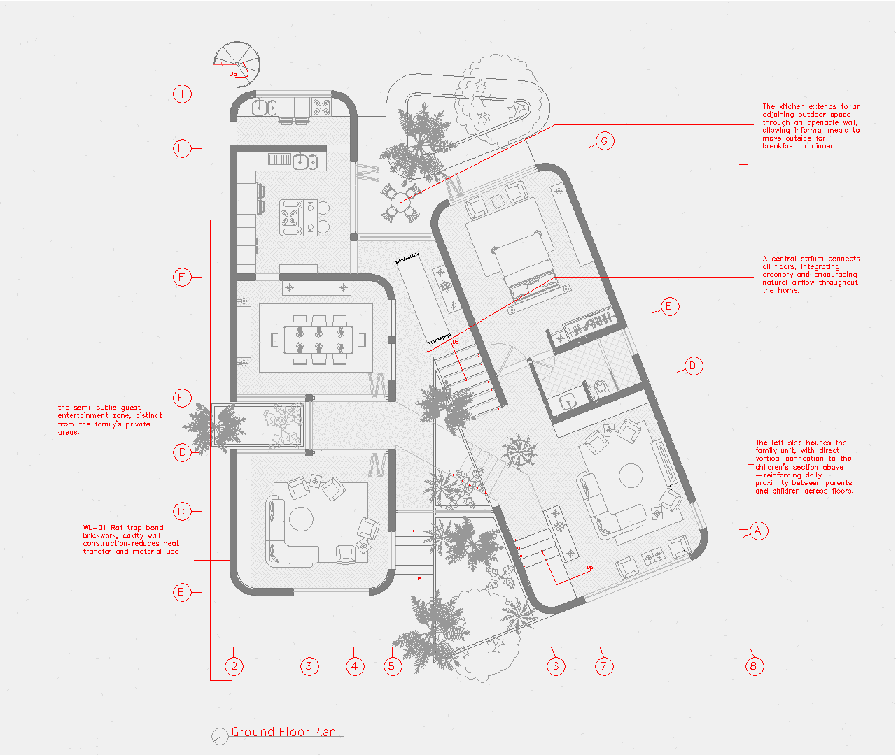
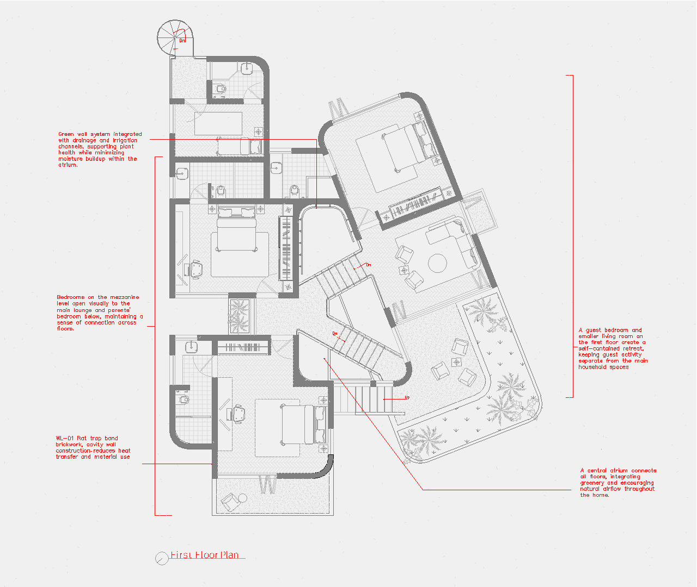
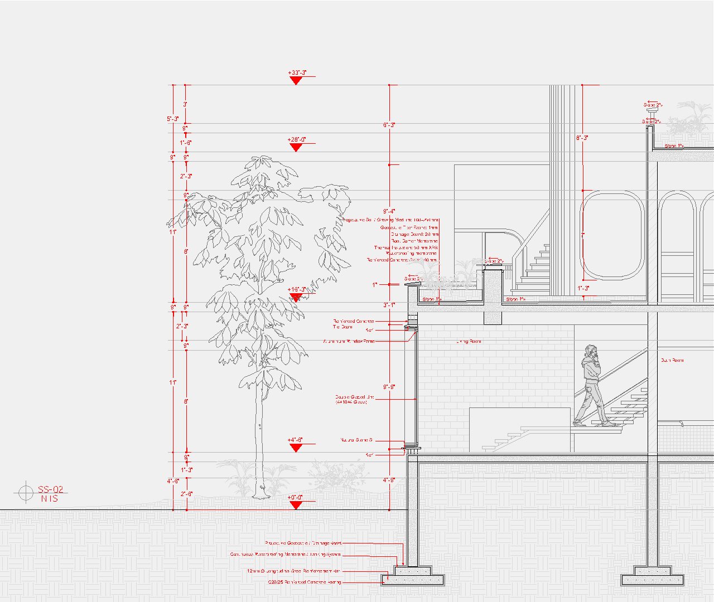
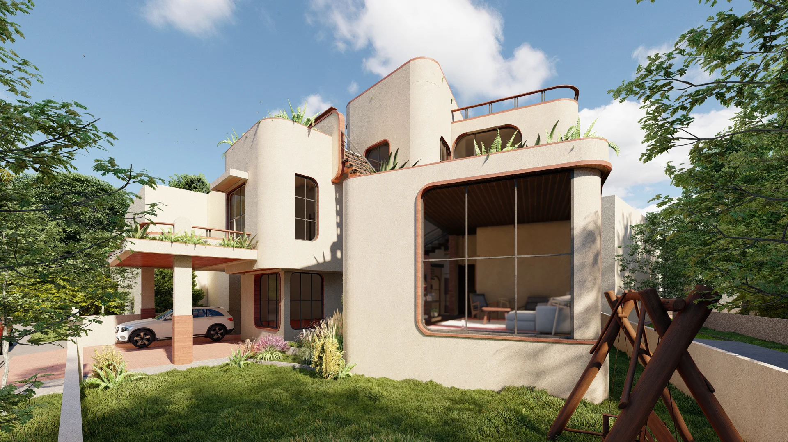
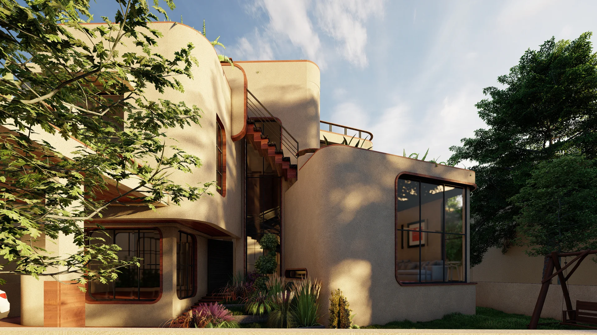
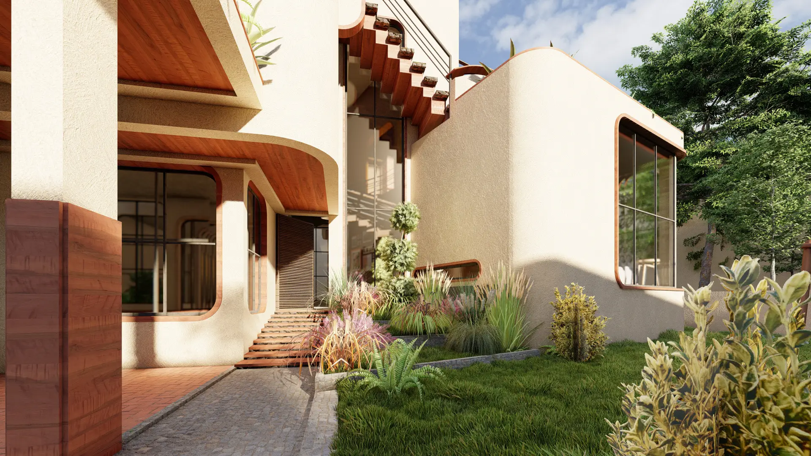
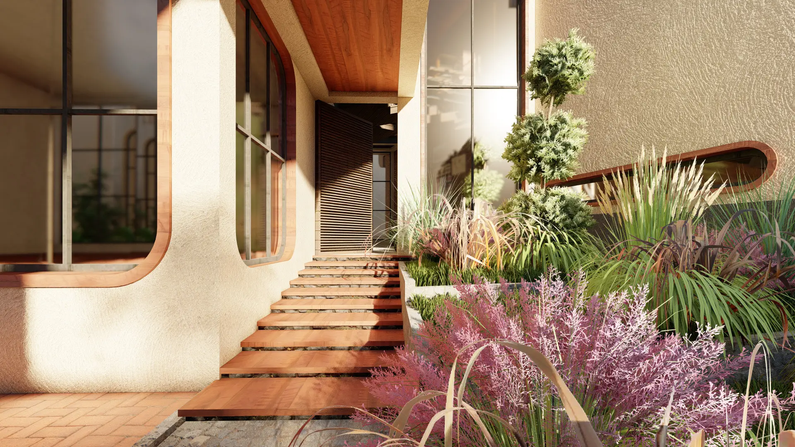
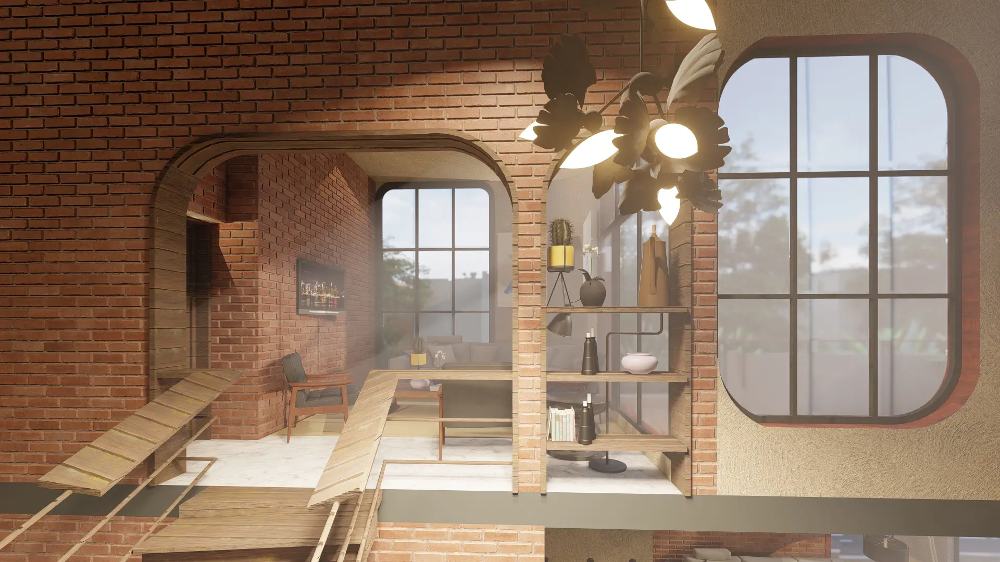
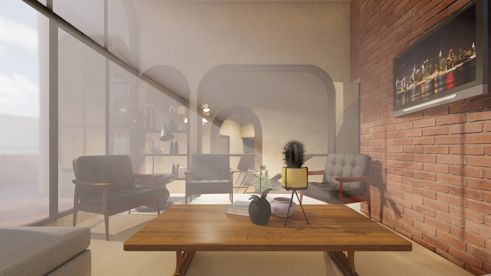

Residential Architecture
AJ House
A contemporary 2-kanal residence designed around spatial flow, natural light, and climate performance. The layout clearly separates the guest wing from the family quarters, with a central atrium binding the spaces together. The ground floor houses the parents' bedroom, while a connected mezzanine above accommodates the children's area to keep family spaces close. To handle the local climate, the exterior walls are built with a rat-trap bond to improve insulation and reduce heat transfer. The flat roof is covered with vegetation, acting as a natural thermal barrier while doubling as a productive garden for the household.








